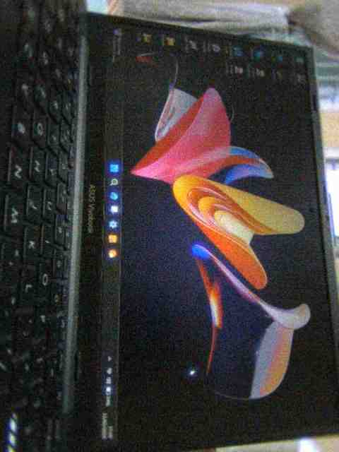
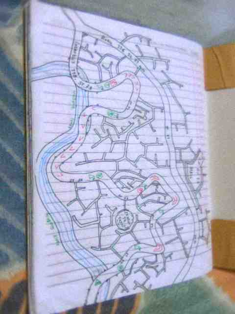
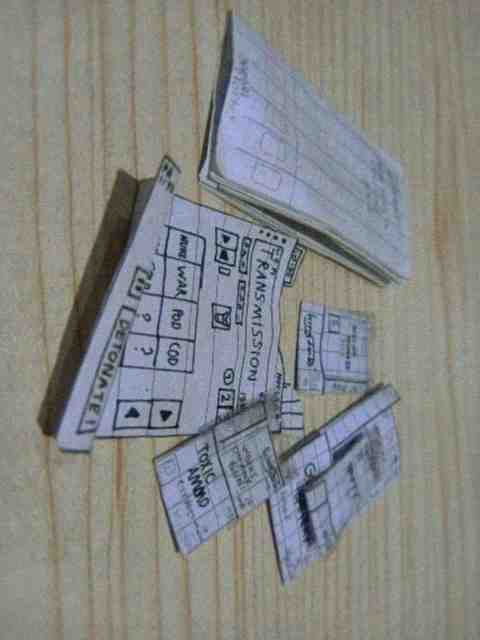

Selamat datang di AimarWebProject!
Untuk yang berkunjung ke website ini, senang bertemu dengan Anda! Terima kasih telah mengunjungi website saya! Silakan lihat-lihat apapun yang ada di website saya ini jika Anda baru datang di website saya. Dibawah ini ada perkenalan saya dan cerita tentang saya, hobi saya dan banyak lah.
Mengapa saya membuat website ini?
Agar Anda semua dapat melihat karya saya (karya gambar saya, karya pemrograman, dll.), foto-foto kucing saya serta bagaimana mereka ditemukan, PDF kucing saya, music yang saya buat. Jadi begitulah mengapa saya membuat website ini dengan penuh kreatifitas!
Introduksi / Pengenalan

Hai, nama saya AimarRd8951. Lihat dibawah untuk lebih detil
Saya suka menggambar, membuat artikel, dan programming
Cerita tentang saya
Halo semua! Nama saya Aimar R.D dan saya tinggal di sebuah kota di Indonesia. Saya tinggal bersama tetangga main dan keluarga saya di rumah, Sangat seru tinggal bersama keluarga ini!
Saya suka bermain diluar bersama tentangga main saya yang berada di sebelah rumah saya. Saya biasanya bersepeda keliling komplek bersama teman saya atau bermain kucing dengan teman saya. Kyknya lebih seru dan sehat bermain sepeda keliling ke kampung deh.



Kalau dirumah biasanya saya sering bermain komputer, menggambar peta saya, atau mungkin berkreatifitas membuat sebuah tas yang didalamnya benda-benda yang saya buat. By the way saya memiliki tabungan yang sudah dijaga dan ditabung sejak tahun 2025, sekarang tahun 2026 sudah banyak uangnya!


Hewan yang paling saya sukai adalah kucing. Kucing adalah hewan yang sangat lucu dan sering keluar dijalanan, itulah mengapa saya suka main kucing di rumah, sesudah shalat, atau saat saya sedang main diluar. Kucing-kucing jalanan lah yang saya suka melihat dan mengelus.
Silvia kucing peliharaan saya
Silvia merupakan salah satu kucing yang berada di kompleks Aryawidura, tapi dia juga peliharaan saya! Kucing ini adalah kucing yang mempunyai 3 warna yaitu hitam kuning dan putih. Kucing ini sering meminta makan kepada saya, biasanya ia meminta ikan atau ayam wings. Dia sekarang dapat membuka pintu rumah saya dengan mudah! Seharusnya dia tidak melakukan hal seperti itu karena orangtua saya melarang kucing untuk masuk rumah karena terkadang Silvia masuk selokan air.


Cerita singkat makanan Silvia
Saya dan keluarga saya melarang Silvia untuk masuk ke dalam rumah karena Silvia mungkin berkeluyuran hingga ke dalam selokan di komplek. Silvia kami kasih makan saat waktu pagi, siang, ataupun sore jika kami memiliki ikan Tongkol atau Cue. Dulu Silvia sering makan chicken wings sisa bekal saya, namun sekarang dia memakan ikan yang keluarga saya belikan diluar pada saat hari Minggu atau Sabtu. Begitu Silvia langsung melihat makanan diatas dia, dia langsung berteriak memintanya kepada kami, dan kami pun kaget Silvia berlari-larian supaya mendapatkan makanan yang kami pegang di atas. Saat Silvia teriak Viricossa (yaitu teman Silvia) bergegas mencari asal suara itu karena Viricossa pasti tahu teriakan itu yang berarti Silvia berteriak bergegas ingin mendapatkan makanan ikannya.
Fakta-fakta menarik tentang Silvia
- Silvia sudah menjadi peliharaan
kami sejak tahun 2025.
- Silvia kadang tidak terkaget
saat saya lompat dihadapannya.
- Kadang jika Silvia sedang
takut dia tidak menghindar.
Link ke postingan saya
Saya kangen Ikrason yang sudah tiada..
, Beberapa tahun yang lalu, Ikrason adalah kucing favorit saya karena beliau selalu menemani saya saat waktu pagi, ia selalu berada di depan pagar.
Viricossa membentuk seperti roti
, Beberapa bulan yang lalu saya mendapatkan gambar kucing Viricossa duduknya sedang membentuk seperti roti di kesedan saat waktu pagi hari.
Kangen muka Suzie yang dulu..
, Dulu muka Suzie adalah muka kucing yang paling cantik dan sering bergaul di komplek saya. Sekarang sudah tidak, jadi saya kangen sekali.
Elvina menghilang tanpa jejak
, Elvina si anak kucing tiba-tiba menghilang sejak awal tahun 2026. Tidak ada jejak, dia kemana ya? Sepertinya ke jalan yang jauh.
Saya suka bersepeda keliling
, Sepeda itu menyehatkan, jadi kemanapun saya akan memakai sepeda. Sepeda sangat cepat juga dan efektif.
Viricossa makan di pagi hari sendirian
, Si Viricossa kucing kami memakan ikan Cue sendirian di pagi hari saat hujan. Tidak ada teman.
Bottleflip botol berhasil dari 2 meter!
, Teman saya dan saya melihat bahwa botol itu berhasil berdiri dari jarak sejauh 2 meter. Ini sangatlah gila!
Silvia melompat kaget tanpa ada suara
, Silvia tiba-tiba melompat saat tidak ada suara yang bisa saya dengar. Mengapa ini terjadi?
Silvia dan Viricossa tidur bersama dengan lucu
, Silvia dan Viricossa sedang tidur bersama, dan pada saat itu kakak saya menangkap gambar ini! Sangat lucu sekali!
Hak Cipta © 2026 AimarWebProject. Dibuat oleh Aimar R.D.